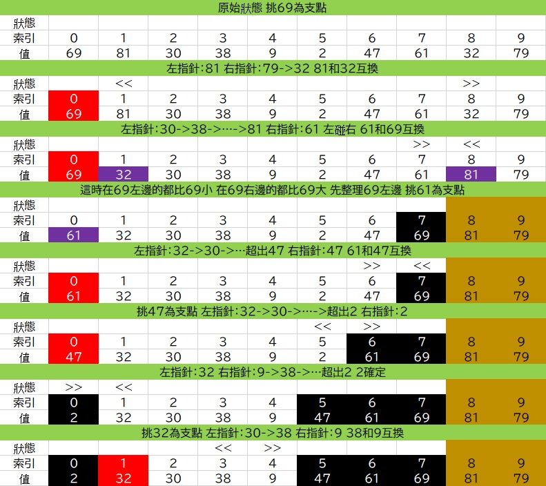

快速排序法，其時間複雜度為O(nlogn)，適合用在資料量較大的群體。當初在學資料結構、演算法的時候，我覺得Quick Sort的方法實在有點複雜，所以當我需要排序的時候，我都是用Merge Sort，或是有時候直接用C的qsort，以及C++的sort。
操作
這是一個循環，先在一堆資料中隨機找一個支點(pivot)，並用兩個箭頭，一個從資料的最前端開始往後找比支點大的資料，一個從資料的最尾端開始往前找比支點小的資料。兩個箭頭都找到資料後，就讓這兩筆資料互換，並繼續同樣的動作直到兩個箭頭碰到彼此，並讓pivot和兩個箭頭中比pivot小的資料 互換，然後進行下個循環，就這樣一直交換到整堆資料達到ascended order才結束。
範例
假設我們今天需要對[69, 81, 30, 38, 9, 2, 47, 61, 32, 79]這個array做quick sort，那下面兩張圖就是quick sort的過程。
紅色背景：pivot
黑色背景：確定位置的資料
紫色背景：上一步驟中有交換的資料
土色背景：暫時用不到的區域

實作
參照上面示意圖的方法，用C實現。
1
2
3
4
5
6
7
8
9
10
11
12
13
14
15
16
17
18
19
20
21
22
23
24
25
26
27
28
29
30
31
32
33
34
| #include<stdio.h>
void qs(int arr[], int left, int right){
if(left < right){
int pivot = arr[left];
int arrowL = left, arrowR = right, t, i;
while(1){
while(arrowL<right && arr[arrowL]<pivot){arrowL++;}
while(arrowR>0 && arr[arrowR]>pivot){arrowR--;}
if(arrowL >= arrowR){break;}
t=arr[arrowL];
arr[arrowL]=arr[arrowR];
arr[arrowR]=t;
}
t=arr[left];
arr[left]=arr[arrowR];
arr[left]=t;
qs(arr, left, arrowR-1);
qs(arr, arrowR+1, right);
}
}
int main(){
int i, arr[10]={69, 81, 30, 38, 9, 2, 47, 61, 32, 79};
printf("排序前：");
for(i=0; i<10; i++){printf("%d ",arr[i]);}
qs(arr, 0, 9);
printf("\n排序後：");
for(i=0; i<10; i++){printf("%d ",arr[i]);}
return 0;
}
|